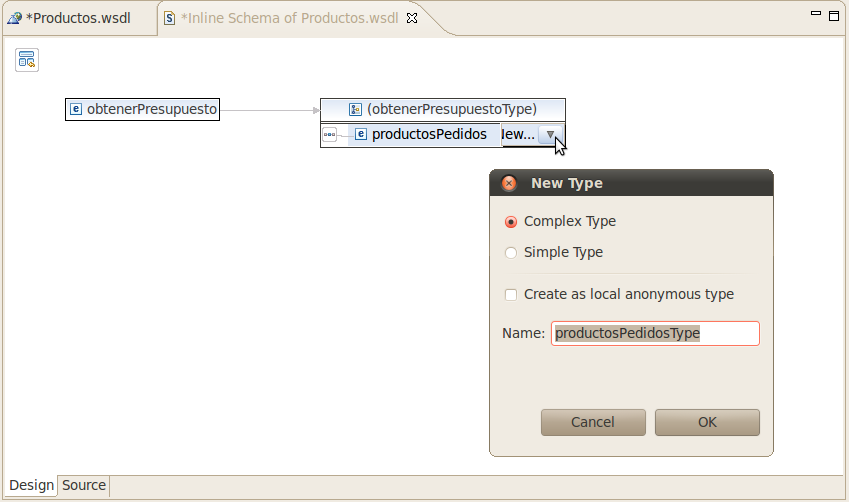
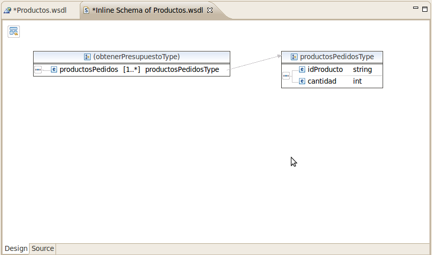
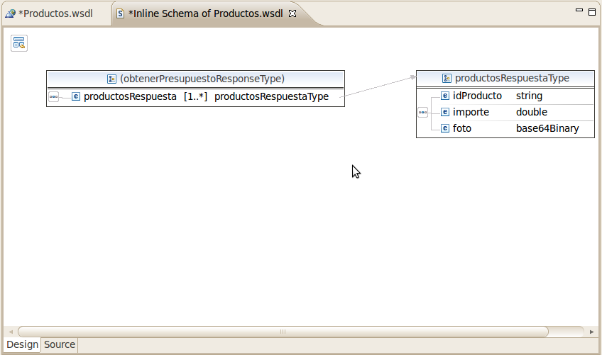
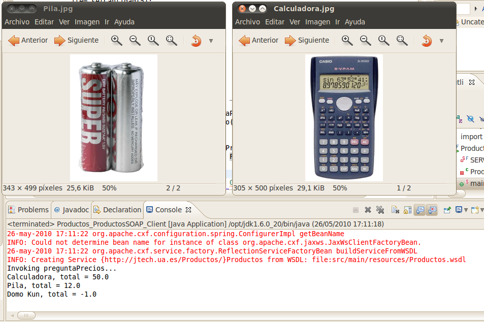
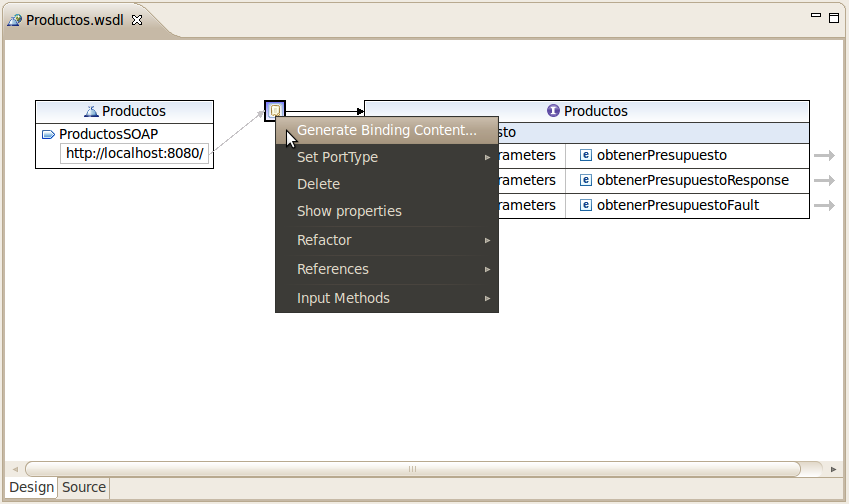

Optimización de servicios web
Estructuras de datos complejas
En muchas ocasiones es necesario enviar cadenas de datos de diferentes longitudes, o estructuras que contienen distintos campos. Por ejemplo, cuando consultamos a una tienda una serie de productos, conviene hacer una única petición al servicio web, que incluya toda la lista de productos. Si por cada producto que queremos consultar, realizáramos una nueva petición al servicio web, la eficiencia se vería muy deteriorada. Para crear estructuras de datos complejas utilizaremos en el WSDL las etiquetas <xsd:complexType> y <xsd:sequence>, combinadas con <xsd:element>. En el siguiente ejemplo utilizaremos el editor gráfico de WSDL de eclipse.
Copiamos el proyecto SWServicio y lo pegamos como ProductosServidor. Cambiamos el nombre de Servicio.wsdl que se encuentra en src/main/resources, a Productos.wsdl. Lo editamos en modo XML y cambiamos todas las ocurrencias de la cadena "Servicio" por "Productos". Guardamos y editamos en modo visual. Cambiamos el nombre de la operación "saluda" por "obtenerPresupuesto". Automáticamente se cambiarán los nombres de los parámetros de entrada y de salida. A continuación pinchamos en la flecha del primer parámetro, "obtenerPresupuesto", y se abre una nueva pestaña con "(obtenerPresupuestoType)", que contiene una secuencia de elementos: "nombre" y "apellido". Los eliminamos ambos. La secuencia queda vacía y pulsando sobre ella con el botón derecho, añadimos un nuevo elemento y lo llamamos productosPedidos. Seleccionamos el tipo "New Type" y creamos un nuevo "Complex Type" con el nombre por defecto, "productosPedidosType".

Aceptamos y pulsamos sobre "productosPedidos" con el botón derecho para cambiar la multiplicidad a 1 ó más: Set Multiplicity / "1..*". A continuación editamos el tipo "(obtenerPresupuestoType)" pulsando con doble click sobre él, para entrar en una nueva pestaña que lo asocia con la definición del "productosPedidosType". Con el botón derecho sobre "productosPedidosType" añadimos una secuencia, y dentro de ésta añadimos dos nuevos elementos, uno de tipo string, llamado "idProducto", y otro de tipo int llamado "cantidad".

Guardamos y cerramos la pestaña, para volver a Productos.wsdl. Ahora pulsamos sobre la flecha que hay a la derecha del parámetro de entrada, "obtenerPresupuestoResponse". Eliminamos el único elemento que hay en la secuencia definida en el tipo, y añadimos uno nuevo a la secuencia, llamado "productosRespuesta", con un nuevo tipo, de tipo complejo y con el nombre por defecto, "productosRespuestaType". Hacemos doble click en "(obtenerPresupuestoResponseType)" para entrar en la pestaña de definición de ese tipo. En "productosRespuestaType" añadimos una nueva secuencia y a ésta le añadimos tres nuevos elementos: "idProducto", de tipo string, "importe", de tipo double, y "foto", de tipo base64binary (este último tipo está disponible si pulsamos "Browse" para buscar el tipo, ya que no viene por defecto en la lista de tipos desplegable).

Ahora podemos guardar y cerrar esta pestaña. Si editamos Productos.wsdl en modo XML, éste consiste en:
<?xml version="1.0" encoding="UTF-8" standalone="no"?>
<wsdl:definitions xmlns:soap="http://schemas.xmlsoap.org/wsdl/soap/"
xmlns:tns="http://jtech.ua.es/Productos/"
xmlns:wsdl="http://schemas.xmlsoap.org/wsdl/"
xmlns:xsd="http://www.w3.org/2001/XMLSchema"
name="Productos" targetNamespace="http://jtech.ua.es/Productos/">
<wsdl:types>
<xsd:schema targetNamespace="http://jtech.ua.es/Productos/">
<xsd:element name="obtenerPresupuesto">
<xsd:complexType>
<xsd:sequence>
<xsd:element name="productosPedidos"
type="tns:productosPedidosType"
maxOccurs="unbounded" minOccurs="1" />
</xsd:sequence>
</xsd:complexType>
</xsd:element>
<xsd:element name="obtenerPresupuestoResponse">
<xsd:complexType>
<xsd:sequence>
<xsd:element name="productosRespuesta"
type="tns:productosRespuestaType"
maxOccurs="unbounded" minOccurs="1" />
</xsd:sequence>
</xsd:complexType>
</xsd:element>
<xsd:complexType name="productosPedidosType">
<xsd:sequence>
<xsd:element name="idProducto" type="xsd:string" />
<xsd:element name="cantidad" type="xsd:int" />
</xsd:sequence>
</xsd:complexType>
<xsd:complexType name="productosRespuestaType">
<xsd:sequence>
<xsd:element name="idProducto" type="xsd:string" />
<xsd:element name="importe" type="xsd:double" />
<xsd:element name="foto" type="xsd:base64Binary" />
</xsd:sequence>
</xsd:complexType>
</xsd:schema>
</wsdl:types>
<wsdl:message name="obtenerPresupuestoRequest">
<wsdl:part element="tns:obtenerPresupuesto"
name="parameters"/>
</wsdl:message>
<wsdl:message name="obtenerPresupuestoResponse">
<wsdl:part element="tns:obtenerPresupuestoResponse"
name="parameters"/>
</wsdl:message>
<wsdl:portType name="Productos">
<wsdl:operation name="obtenerPresupuesto">
<wsdl:input message="tns:obtenerPresupuestoRequest"/>
<wsdl:output message="tns:obtenerPresupuestoResponse"/>
</wsdl:operation>
</wsdl:portType>
<wsdl:binding name="ProductosSOAP" type="tns:Productos">
<soap:binding style="document"
transport="http://schemas.xmlsoap.org/soap/http"/>
<wsdl:operation name="obtenerPresupuesto">
<soap:operation
soapAction="http://jtech.ua.es/Productos/obtenerPresupuesto"/>
<wsdl:input>
<soap:body use="literal"/>
</wsdl:input>
<wsdl:output>
<soap:body use="literal"/>
</wsdl:output>
</wsdl:operation>
</wsdl:binding>
<wsdl:service name="Productos">
<wsdl:port binding="tns:ProductosSOAP" name="ProductosSOAP">
<soap:address location="http://localhost:8080/"/>
</wsdl:port>
</wsdl:service>
</wsdl:definitions>
Ahora podemos eliminar el paquete es.ua.jtech.servicio y editar el GeneraCodigo.java para que la llamada al generador lea el nuevo documento WSDL:
WSDLToJava.main(new String[]{
"-server",
"-d","src/main/java",
"src/main/resources/Productos.wsdl" });
Generamos el código y pulsamos Refresh. Movemos el servidor generado en Productos_ProductosSOAP_Server.java a un nuevo paquete, "es.ua.jtech.productos.custom", porque lo vamos a modificar y no queremos que se confunda con el código autogenerado. Para moverlo podemos utilizar la opción Refactor / Move / Create Package... y añadimos ".custom" al paquete en el que ya estaba. Aceptamos y el .java aparece en el nuevo paquete. Ahora lo editamos para corregir el error que presenta. Pulsamos sobre las sugerencias para reparar el error y seleccionamos la primera, que es la de crear una nueva clase llamada ProductosImpl. En el asistente de creación de la clase añadimos la implementación de la interfaz "Productos", dejamos que el paquete donde se genere sea también el custom y pulsamos Finish.
Aparece la sobrecarga del método obtenerPresupuesto. Debemos introducir la creación de una nueva lista de productos de respuesta. Para ello recorreremos uno a uno los productos de la lista productosPedidos y crearemos un nuevo ProductosRespuestaType con un idProducto, foto e importe, según el producto y la cantidad que tengamos en el ProductosPedidosType. En cada iteración añadiremos ese nuevo ProductosRespuestaType a la lista que hemos creado al principio del método, y al finalizar el bucle devolveremos dicha lista.
List<ProductosRespuestaType> prs =
new ArrayList<ProductosRespuestaType>();
for(ProductosPedidosType prPedido : productosPedidos){
ProductosRespuestaType pr = new ProductosRespuestaType();
pr.setIdProducto(prPedido.getIdProducto());
pr.setImporte( ... );
pr.setFoto( ... );
prs.add(pr);
}
return prs;
Lo normal sería que el servidor hiciera una consulta a una base de datos. En este ejemplo vamos a introducir los productos directamente en el código. Vamos a tener en cuenta el producto "Calculadora" y el producto "Pila". Para devolver la imagen del producto al cliente, vamos a descargar dos fotos arbitrarias en formato JPG, y las guardaremos como src/main/resources/fotos/calc.jpg y src/main/resouces/fotos/pila.jpg en el proyecto ProductosCliente. Una vez implementada la lógica de la operación, incluyendo la lectura de la imagen y su conversión a cadena de bytes, el código queda así:
package es.ua.jtech.productos.custom;
import java.io.ByteArrayOutputStream;
import java.io.FileInputStream;
import java.io.FileNotFoundException;
import java.io.IOException;
import java.util.ArrayList;
import java.util.List;
import es.ua.jtech.productos.Productos;
import es.ua.jtech.productos.ProductosPedidosType;
import es.ua.jtech.productos.ProductosRespuestaType;
public class ProductosImpl implements Productos {
@Override
public List<ProductosRespuestaType> obtenerPresupuesto(
List<ProductosPedidosType> productosPedidos) {
List<ProductosRespuestaType> prs =
new ArrayList<ProductosRespuestaType>();
for(ProductosPedidosType prPedido : productosPedidos){
ProductosRespuestaType pr =
new ProductosRespuestaType();
pr.setIdProducto(prPedido.getIdProducto());
FileInputStream fis = null;
if(prPedido.getIdProducto().toLowerCase()
.equals("calculadora")){
pr.setImporte(prPedido.getCantidad()*10);
try {
fis = new FileInputStream(
"src/main/resources/fotos/calc.jpg");
} catch (FileNotFoundException e) {
e.printStackTrace();
fis = null;
}
}else if(prPedido.getIdProducto().toLowerCase()
.equals("pila")){
pr.setImporte(((double)prPedido.getCantidad())*0.60);
try {
fis = new FileInputStream(
"src/main/resources/fotos/pila.jpg");
} catch (FileNotFoundException e) {
e.printStackTrace();
fis = null;
}
}else{
pr.setImporte(-1);
fis = null;
}
if(fis == null){
pr.setFoto(null);
}else{
ByteArrayOutputStream baos =
new ByteArrayOutputStream();
byte[] buffer = new byte[1024];
try {
int nbytes;
while(true){
if((nbytes=fis.read(buffer)) == -1){
break;
}
baos.write(buffer,0,nbytes);
}
pr.setFoto(baos.toByteArray());
} catch (IOException e) {
e.printStackTrace();
pr.setFoto(null);
}
}
prs.add(pr);
}
return prs;
}
}
Con esto tenemos terminado el servidor del servicio web. Implementar el cliente es tan sólo cuestión de generar el código e introducir unos productos de prueba para comprobar que la llamada funciona. Copiamos el proyecto SWCliente como un nuevo proyecto llamado ProductosCliente. Eliminamos el paquete es.ua.jtech.servicio y eliminamos Servicio.wsdl. Copiamos en su lugar el nuevo, Productos.wsdl y cambiamos el nombre del WSDL en GeneraCodigo.java. Generamos el código y refrescamos. Movemos con el Refactor la clase Productos_ProductosSOAP_Client a un nuevo paquete es.ua.jtech.productos.custom y la editamos para introducir productos. Una vez realizada la llamada con la lista de productos y sus cantidades correspondientes, obtenemos una lista de productos de respuesta. La recorremos y mostramos sus importes, y sus identificadores, mientras que sus imágenes las guardamos en disco con un nuevo nombre que depende del identificador, y también utilizamos el un comando externo para mostrar las imágenes, en este ejemplo, la aplicación Eye of Gnome. La parte de la llamada del programa cliente podría ser algo así:
{
System.out.println("Invoking preguntaPrecios...");
java.util.List<ProductosPedidosType> items =
new ArrayList<ProductosPedidosType>();
ProductosPedidosType item;
item = new ProductosPedidosType();
item.setIdProducto("Calculadora");
item.setCantidad(5);
items.add(item);
item = new ProductosPedidosType();
item.setIdProducto("Pila");
item.setCantidad(20);
items.add(item);
item = new ProductosPedidosType();
item.setIdProducto("Domo Kun");
item.setCantidad(2);
items.add(item);
java.util.List<ProductosRespuestaType> _preguntaPrecios__return
= port.obtenerPresupuesto(items);
for(ProductosRespuestaType pr:_preguntaPrecios__return){
System.out.println(pr.getIdProducto()+", total = "
+ pr.getImporte());
if(pr.getFoto()!=null){
try{
String filename = pr.getIdProducto()+".jpg";
FileOutputStream fos =
new FileOutputStream(filename);
fos.write(pr.getFoto());
fos.close();
//Ejecutar el visor Eye of Gnome
Runtime.getRuntime().exec("eog -n "+filename);
}catch(IOException e){
System.out.println("Error escribiendo la imagen: "
+ pr.getIdProducto());
}
}
}
}
Ejecutamos el servidor y a cuando haya arrancado ejecutamos el cliente. El resultado es:

Envío de excepciones SOAP
En el anterior ejemplo hemos indicado con un "-1" que el producto Domo Kun no existe en la lista de productos. Esto no es una buena práctica de programación, ya que podría darse el caso de que el importe realmente consistiese en devolver un euro. Además, "-1" no es un error explicativo, y si hubiera varias causas posibles no podría especificarse fácilmente cuál de ellas ha sido. En estos casos conviene utilizar excepciones y enviarlas en los mensajes SOAP.
Vamos a editar el Productos.wsdl de ProductosServidor y, en el modo de diseño, pulsamos sobre la operación "obtenerPresupuesto" y seleccionamos "Add Fault". Aparece un nuevo parámetro fault, con el elemento obtenerPresupuestoFault. Para asegurarnos de que el binding de los datos es el correcto, hacemos click sobre el cuadrado pequeño que uno el servicio con el interfaz a través de flechas. Éste representa el binding. Con el botón derecho pulsamos a Generate Binding Content... y marcamos la casilla Overwrite existing binding information, dejando el resto por defecto y pulsamos Finish.

Guardamos el WSDL y lo sobreescribimos en el proyecto ProductosCliente para que sea el mismo. En ambos eliminamos los paquetes es.ua.jtech.productos y volvemos a generar sus códigos. Podemos eliminar del cliente la nueva clase cliente generada, pues ya tenemos la nuestra en el paquete custom, y así mismo eliminamos el nuevo servidor generado, que viene marcado por un error.
Para lanzar la excepción vamos a editar es.ua.jtech.productos.custom.ProductosImpl y en el caso del producto no existente, lanzamos una nueva ObtenerPresupuestoFault_Exception (que está definida en el código recién generado):
}else{
pr.setImporte(-1);
fis = null;
throw new ObtenerPresupuestoFault_Exception(
"No existe el producto "+prPedido.getIdProducto());
}
El entorno marcará esa línea como errónea y nos sugerirá añadir la cláusula throw a la definición del método como primera opción, y es la que debemos seleccionar. Este throw lo podemos declarar porque la nueva interfaz Productos así lo especifica.
Con esto el servidor está listo. Lo arrancamos y a continuación ejecutamos el cliente. La salida es:
Invoking preguntaPrecios...
Exception in thread "main" javax.xml.ws.soap.SOAPFaultException:
No existe el producto Domo Kun
at org.apache.cxf.jaxws.JaxWsClientProxy.invoke(
JaxWsClientProxy.java:146)
at $Proxy40.obtenerPresupuesto(Unknown Source)
at es.ua.jtech.productos.custom.Productos_ProductosSOAP_Client.
main(Productos_ProductosSOAP_Client.java:80)
Caused by: org.apache.cxf.binding.soap.SoapFault:
No existe el producto Domo Kun
[...]
Es decir, nuestra llamada al servicio web efectivamente ha lanzado la excepción y no la hemos capturado. Para capturarla sobra con añadir un try/catch en el cliente:
try{
java.util.List<ProductosRespuestaType> _preguntaPrecios__return
= port.obtenerPresupuesto(items);
for(ProductosRespuestaType pr:_preguntaPrecios__return){
[...]
}
}catch(SOAPFaultException e){
System.out.println("Error: " + e.getMessage()+
". Llamada al servicio web abortada.");
}
Finalmente comentamos la línea del servidor que lanza la excepción, para que el ejemplo siga funcionando correctamente, ya que lo vamos a utilizar a continuación.
//throw new ObtenerPresupuestoFault_Exception(
"No existe el producto "+prPedido.getIdProducto());
Mecanismo de optimización de la transmisión de mensajes
Para que los archivos se transmitan de forma eficiente hay que utilizar el mecanismo de optimización de la transmisión de mensajes, MTOM. Tanto CXF como Axis2 lo soportan, pero hay que activarlo tanto en el cliente, como en el servidor. También vamos a indicar el tipo mime en el WSDL.
Editamos Productos.wsdl y añadimos a los espacios de nombres de la primera etiqueta:
xmlns:xmime="http://www.w3.org/2005/05/xmlmime"
Ahora podemos añadir el tipo mime a la foto:
<xsd:element name="foto" type="xsd:base64Binary"
xmime:expectedContentTypes="application/octet-stream"/>
Guardamos el WSDL y lo copiamos al otro proyecto para que sea el mismo en ProductosCliente y en ProductosServidor. Eliminamos los paquetes es.ua.jtech.productos de ambos proyectos y volvemos a generar el código. En el servidor eliminamos la nueva clase servidor que se ha generado, porque tenemos la nuestra en el paquete custom. Nuestra implementación ProductosImpl.java da un error. Se debe a que el método setFoto ya no acepta como parámetro una cadena de bytes sino un DataHandler, clase que gestiona de forma eficiente los streams de entrada: sin cargarlos enteros en memoria, sino cargándolos bajo demanda. Así pues, ya no vamos a utilizar el buffer de bytes ni el FileInputStream, sino que vamos a utilizar un DataSource. El código se simplifica un poco, al no tener que cargar datos por medio de un buffer. También desaparecen los try/catch:
@Override
public List<ProductosRespuestaType> obtenerPresupuesto(
List<ProductosPedidosType> productosPedidos)
throws ObtenerPresupuestoFault_Exception {
List<ProductosRespuestaType> prs =
new ArrayList<ProductosRespuestaType>();
for(ProductosPedidosType prPedido : productosPedidos){
ProductosRespuestaType pr = new ProductosRespuestaType();
pr.setIdProducto(prPedido.getIdProducto());
DataHandler dh = null;
if(prPedido.getIdProducto().toLowerCase().
equals("calculadora")){
pr.setImporte(prPedido.getCantidad()*10);
dh = new DataHandler(new FileDataSource(
"src/main/resources/fotos/calc.jpg"));
}else if(prPedido.getIdProducto().toLowerCase().
equals("pila")){
pr.setImporte(((double)prPedido.getCantidad())*0.60);
dh = new DataHandler(new FileDataSource(
"src/main/resources/fotos/pila.jpg"));
}else{
pr.setImporte(-1);
dh = null;
//throw new ObtenerPresupuestoFault_Exception(
"No existe el producto "+prPedido.getIdProducto());
}
pr.setFoto(dh);
prs.add(pr);
}
return prs;
}
Con estos cambios el error desaparece, pero todavía hay que activar de manera explícita MTOM en el servidor. Editamos es.ua.jtech.productos.custom.Productos_ProductosSOAP_Server y cambiamos su constructor:
protected Productos_ProductosSOAP_Server() throws Exception {
System.out.println("Starting Server");
Object implementor = new ProductosImpl();
String address = "http://localhost:8080/";
Endpoint endpoint = Endpoint.publish(address, implementor);
SOAPBinding binding = (SOAPBinding)endpoint.getBinding();
binding.setMTOMEnabled(true);
}
donde SOAPBinding pertenece al paquete javax.xml.ws.soap.
Hemos terminado con la parte del servidor y ahora vamos a arreglar el cliente. Eliminamos la clase Productos_ProductosSOAP_Client.java del paquete productos y editamos la del paquete custom, que da un error en la línea:
fos.write(pr.getFoto());
La cambiamos por:
pr.getFoto().writeTo(fos);
lo cual soluciona el error, y ahora sólo falta activar MTOM. Después de la creación del puerto,
Productos port = ss.getProductosSOAP();
añadimos las líneas:
SOAPBinding binding = (SOAPBinding)((BindingProvider)port).getBinding();
binding.setMTOMEnabled(true);
donde SOAPBinding pertenece al paquete javax.xml.ws.soap y BindingProvider pertenece a javas.xml.ws. Ya podemos ejecutar el cliente, no sin antes ejecutar el servidor y esperar a que arranque. El resultado debe ser el mismo que antes de usar MTOM, pero los mensajes SOAP habrán cambiado. Utilícese el TCP Monitor para ver la diferencia.
En Axis2 la generación del servicio es igual que se ha explicado en las secciones anteriores. Podemos copiar los proyectos Axis2SWCliente y Axis2SWServicio como Axis2ProductosCliente y Axis2ProductosServidor, respectivamente. Eliminamos los paquete autogenerados y el antiguo WSDL, copiando en su lugar Productos.wsdl. Modificamos GeneraCodigo.java con el nuevo nombre del WSDL y generamos y refrescamos en ambos proyectos. En el servidor modificamos la clase ProductosSkeleton para introducir la operación del servicio, y añadimos la carpeta con las imágenes. Para activar MTOM en el servicio editamos el archivo generado src/main/resources/META-INF/services.xml y en la sección donde se añaden parámetros al servicio añadimos:
<parameter name="enableMTOM">true</parameter>
La activación de MTOM en el cliente se haría con:
ProductosStub stub = new ProductosStub( "http://localhost:8080/axis2/services/Productos"); stub._getServiceClient().getOptions().setProperty( Constants.Configuration.ENABLE_MTOM, "true"); stub.obtenerPresupuesto( ... );
Ejercicios
Tienda de DVDs
Nuestro negocio consiste en una tienda que vende películas en DVD a través de Internet. Para dar una mayor difusión a nuestro catálogo de películas, decidimos implantar una serie de Servicios Web para acceder a información sobre las películas que vendemos.
De cada película ofreceremos información sobre su título, su director y su precio. Esta información podemos codificarla en una clase PeliculaTO como la siguiente:
public class PeliculaTO {
private String titulo;
private String director;
private float precio;
public PeliculaTO() {}
public PeliculaTO(String titulo, String director, float precio) {
this.titulo = titulo;
this.director = director;
this.precio = precio;
}
// Getters y setters
...
}
Vamos a permitir que se busquen películas proporcionando el nombre de su director. Por lo tanto, el servicio ofrecerá una operación como la siguiente:
List<PeliculaTO> buscaDirector(String director)
Proporcionaremos el nombre del director, y nos devolverá la lista de películas disponibles dirigidas por este director.
En un principio, podemos crear una lista estática de películas dentro del código de nuestro servicio, como por ejemplo:
final static PeliculaTO[] peliculas = {
new PeliculaTO("Mulholland Drive", "David Lynch", 26.96f),
new PeliculaTO("Carretera perdida", "David Lynch", 18.95f),
new PeliculaTO("Twin Peaks", "David Lynch", 46.95f),
new PeliculaTO("Telefono rojo", "Stanley Kubrick", 15.95f),
new PeliculaTO("Barry Lyndon", "Stanley Kubrick", 24.95f),
new PeliculaTO("La naranja mecánica", "Stanley Kubrick", 22.95f)
};
Se pide:
a) Implementar el servicio. El servicio se llamará TiendaDvdSW, y estará dentro de un proyecto con nombre DVDServicio.
Para construir una lista con las películas cuyo director coincida con el nombre del director que se ha solicitado, podemos utilizar un código similar al siguiente, donde se ha proporcionado un parámetro director:
director = director.toLowerCase();
ArrayList<PeliculaTO> list = new ArrayList<PeliculaTO>();
for (PeliculaTO pelicula : peliculas) {
if (pelicula.getDirector().toLowerCase().indexOf(director) != -1) {
list.add(pelicula);
}
}
return list;
c) Implementar un cliente Java que acceda a dicho servicio. El cliente deberá crearse en un proyecto DVDCliente.